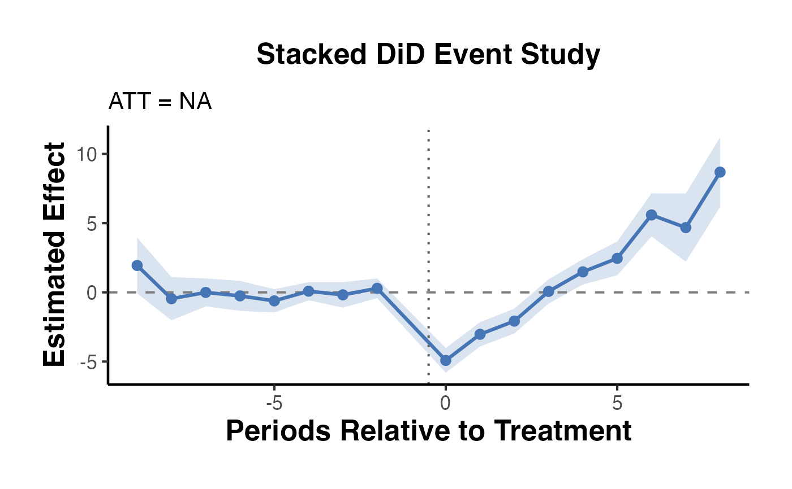

Stacked Difference-in-Differences
stacked_did.RdBuilds the stacked dataset described in Baker et al. (2022) and estimates TWFE regressions to recover the ATT and dynamic effects free of contamination from heterogeneous treatment timing.
Usage
stacked_did(
data,
unit_var,
time_var,
outcome_var,
treat_time_var,
anticipation = 0,
clean_controls = TRUE,
plot = TRUE
)Arguments
- data
A data frame in balanced long panel format.
- unit_var
Character. Name of the unit/panel ID column.
- time_var
Character. Name of the time period column (integer/numeric).
- outcome_var
Character. Name of the outcome variable column.
- treat_time_var
Character. Name of the column recording each unit's first treatment period (
NAor a large number for never-treated).- anticipation
Integer. Number of pre-treatment periods to exclude from the "clean" window. Default
0.- clean_controls
Logical. If
TRUE(default), exclude already-treated units from the control group within each sub-experiment.- plot
Logical. Whether to return an event-study plot. Default
TRUE.
Value
A named list:
estimateScalar ATT (weighted average across cohorts).
event_studyData frame with columns
rel_period,estimate,ci_lo,ci_hi.stacked_dataThe stacked data frame used for estimation.
plotA ggplot2 event-study plot, or
NULLifplot = FALSE.
Details
Stacked Difference-in-Differences Estimator
Implements the stacked DiD estimator following Cengiz et al. (2019) and Baker et al. (2022). For each treatment cohort, a "sub-experiment" dataset is created by stacking the cohort's treated units with clean control units (never-treated or not-yet-treated). TWFE is then estimated on this stacked dataset with cohort-by-period interactions, returning an average treatment effect on the treated (ATT) and event-study dynamic effects.
References
Baker, A. C., Larcker, D. F., & Wang, C. C. Y. (2022). How much should we trust staggered difference-in-differences estimates? Journal of Financial Economics, 144(2), 370-395.
Cengiz, D., Dube, A., Lindner, A., & Zipperer, B. (2019). The effect of minimum wages on low-wage jobs. Quarterly Journal of Economics, 134(3), 1405-1454.
Examples
if (requireNamespace("fixest", quietly = TRUE)) {
data("base_stagg", package = "fixest")
# base_stagg has: id, year, treated, treatment_time, y, ...
res <- stacked_did(
data = base_stagg,
unit_var = "id",
time_var = "year",
outcome_var = "y",
treat_time_var = "year_treated",
anticipation = 0,
clean_controls = TRUE,
plot = TRUE
)
print(res$estimate)
res$plot
}
#> Error in loadNamespace(x) : there is no package called ‘..cohort..’
#> ATT estimation failed: Error in res[[2]] : subscript out of bounds
#> This error was unforeseen by the author of the function feols. If you think your call to the function is legitimate, could you report?
#> [1] NA
